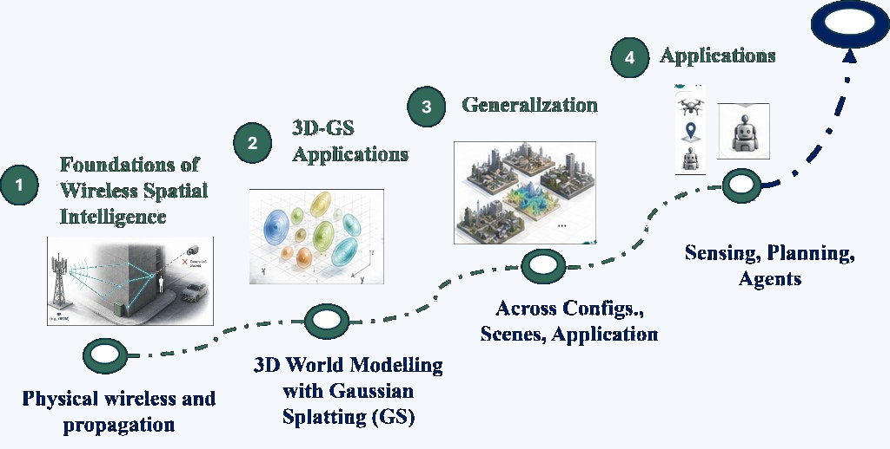
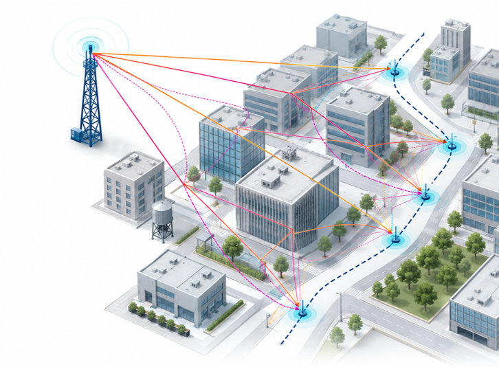

Spatial Channel Modeling
How to move from stochastic channel descriptions to geometry-conditioned models.
Methods to Applications
From wireless radiation fields to world models: a half-day tutorial by HKUST iComAI Lab on reusable spatial knowledge for 6G communications, sensing, and embodied agents.

Tutorial Motivation
Move wireless systems from link-level optimization to spatial intelligence.
Next-generation networks are becoming AI-native, but a deeper bottleneck remains: we still understand channels as short-window, per-link samples, while the physical world is a continuous, shared, and reusable 3D space.
Massive MIMO, ultra-reliable low latency, mixed bands, and dense deployment all ask the same question: when pilots are scarce, CSI is imperfect, and environments change rapidly, how do communications and sensing upgrade from estimating one link to understanding one space?
Spatial intelligence answers this by treating wireless channels as shared projections of the physical environment, building reusable spatial priors through wireless radiation fields and world models—so networks can not only transmit, but also reason, predict, and plan in space.

Learning Outcomes
How to move from stochastic channel descriptions to geometry-conditioned models.
How 3D Gaussian Splatting can support wireless radiance field reconstruction.
How datasets, few-shot adaptation, and cross-scene transfer shape spatial intelligence.
How spatial intelligence enables positioning, planning, UAV networking, and embodied AI.
Half-Day Program
Aligned with the slide deck Spatial Intelligence Tutorial (PDF with notes).
Tutorial Team
Professor, HKUST. IEEE Fellow.
Wireless communications, networking, edge AI, and cooperative AI.
Research Assistant Professor, HKUST.
AI-native air interface, massive MIMO, ISAC, and large AI models.
Post-Doctoral Fellow, HKUST.
AI for wireless, sensing, ISAC, massive MIMO, and channel estimation.
Post-Doctoral Fellow, HKUST.
Wireless communications, machine learning, and sensing.
Special Thanks
Featured contributor to the tutorial materials and core demos.
PhD Student, HKUST iComAI Lab.
3D Gaussian Splatting for wireless radiation field reconstruction and radio map learning (WRF-GS, URF-GS, Point2Radio).
Acknowledgments
For significant contributions to the tutorial materials, we also thank:
Conference Versions
From wireless radiation fields to world models — a half-day path through vision, 3D-GS methods, generalization, and applications.
Conference-specific time, venue, registration link, and released materials will be added here.
Resources